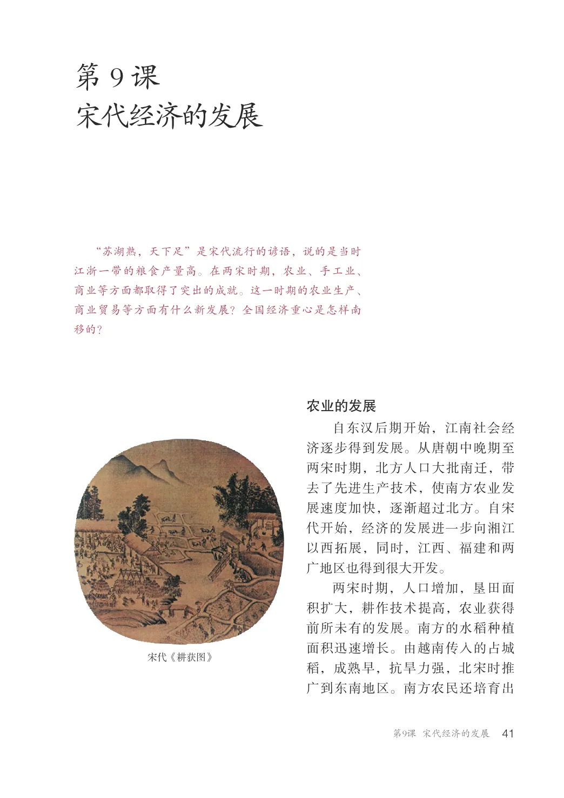
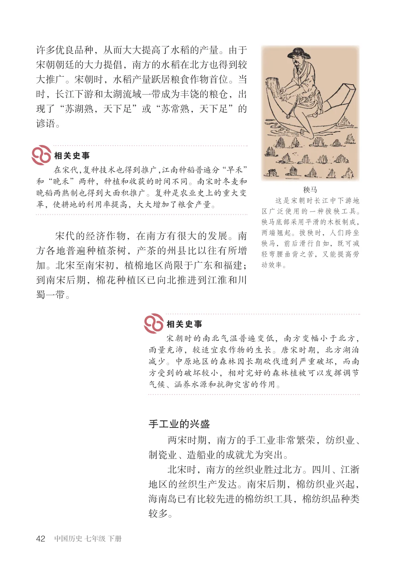
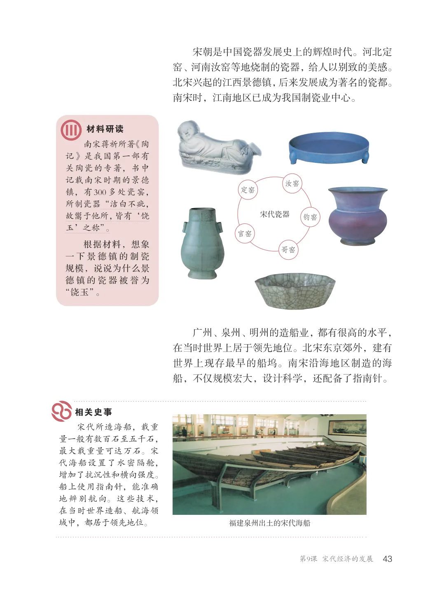
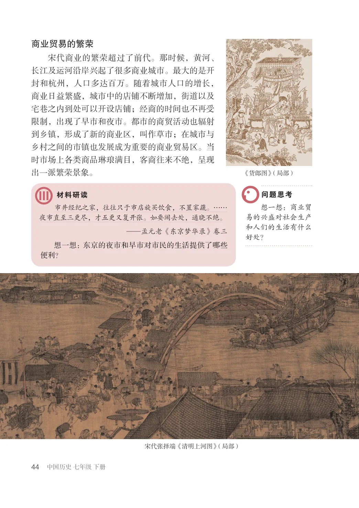
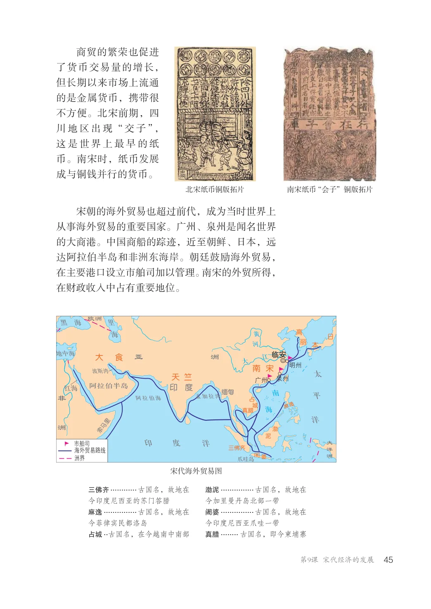
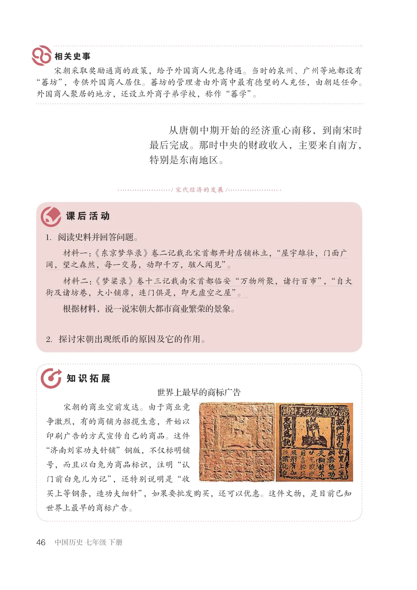

第2单元 · 教材第 41–46 页
第9课 宋代经济的发展
文字版依据教材 PDF 文本层整理；复杂地图、图表及版面关系请以右侧教材原页为准。
“苏湖熟，天下足”是宋代流行的谚语，说的是当时江浙一带的粮食产量高。在两宋时期，农业、手工业、商业等方面都取得了突出的成就。这一时期的农业生产、商业贸易等方面有什么新发展？全国经济重心是怎样南移的？
农业的发展
自东汉后期开始，江南社会经济逐步得到发展。从唐朝中晚期至两宋时期，北方人口大批南迁，带去了先进生产技术，使南方农业发展速度加快，逐渐超过北方。自宋代开始，经济的发展进一步向湘江以西拓展，同时，江西、福建和两广地区也得到很大开发。两宋时期，人口增加，垦田面积扩大，耕作技术提高，农业获得前所未有的发展。南方的水稻种植面积迅速增长。由越南传入的占城稻，成熟早，抗旱力强，北宋时推广到东南地区。南方农民还培育出
宋代《耕获图》

许多优良品种，从而大大提高了水稻的产量。由于宋朝朝廷的大力提倡，南方的水稻在北方也得到较大推广。宋朝时，水稻产量跃居粮食作物首位。当时，长江下游和太湖流域一带成为丰饶的粮仓，出现了“苏湖熟，天下足”或“苏常熟，天下足”的谚语。
在宋代，复种技术也得到推广，江南种稻普遍分“早禾”和“晚禾”两种，种植和收获的时间不同。南宋时冬麦和晚稻两熟制也得到大面积推广。复种是农业史上的重大变革，使耕地的利用率提高，大大增加了粮食产量。
秧马这是宋朝时长江中下游地区广泛使用的一种拔秧工具。秧马底部采用平滑的木板制成，两端翘起。拔秧时，人们跨坐秧马，前后滑行自如，既可减轻弯腰曲背之苦，又能提高劳动效率。
宋代的经济作物，在南方有很大的发展。南方各地普遍种植茶树，产茶的州县比以往有所增加。北宋至南宋初，植棉地区尚限于广东和福建；到南宋后期，棉花种植区已向北推进到江淮和川蜀一带。
宋朝时的南北气温普遍变低，南方变幅小于北方，雨量充沛，较适宜农作物的生长。唐宋时期，北方湖泊减少。中原地区的森林因长期砍伐遭到严重破坏，而南方受到的破坏较小，相对完好的森林植被可以发挥调节气候、涵养水源和抗御灾害的作用。
手工业的兴盛
两宋时期，南方的手工业非常繁荣，纺织业、制瓷业、造船业的成就尤为突出。北宋时，南方的丝织业胜过北方。四川、江浙地区的丝织生产发达。南宋后期，棉纺织业兴起，海南岛已有比较先进的棉纺织工具，棉纺织品种类较多。

宋朝是中国瓷器发展史上的辉煌时代。河北定窑、河南汝窑等地烧制的瓷器，给人以别致的美感。北宋兴起的江西景德镇，后来发展成为著名的瓷都。南宋时，江南地区已成为我国制瓷业中心。
南宋蒋祈所著《陶记》是我国第一部有关陶瓷的专著，书中记载南宋时期的景德镇，有300多处瓷窑，所制瓷器“洁白不疵，故鬻于他所，皆有‘饶玉’之称”。根据材料，想象一下景德镇的制瓷规模，说说为什么景德镇的瓷器被誉为“饶玉”。
宋代瓷器
广州、泉州、明州的造船业，都有很高的水平，在当时世界上居于领先地位。北宋东京郊外，建有世界上现存最早的船坞。南宋沿海地区制造的海船，不仅规模宏大，设计科学，还配备了指南针。
宋代所造海船，载重量一般有数百石至五千石，最大载重量可达万石。宋代海船设置了水密隔舱，增加了抗沉性和横向强度。船上使用指南针，能准确地辨别航向。这些技术，在当时世界造船、航海领域中，都居于领先地位。
福建泉州出土的宋代海船

商业贸易的繁荣
宋代商业的繁荣超过了前代。那时候，黄河、长江及运河沿岸兴起了很多商业城市。最大的是开封和杭州，人口多达百万。随着城市人口的增长，商业日益繁盛，城市中的店铺不断增加，街道以及宅巷之内到处可以开设店铺；经商的时间也不再受限制，出现了早市和夜市。都市的商贸活动也辐射到乡镇，形成了新的商业区，叫作草市；在城市与乡村之间的市镇也发展成为重要的商业贸易区。当时市场上各类商品琳琅满目，客商往来不绝，呈现出一派繁荣景象。
《货郎图》（局部）
想一想：商业贸易的兴盛对社会生产和人们的生活有什么好处？
市井经纪之家，往往只于市店旋买饮食，不置家蔬。……夜市直至三更尽，才五更又复开张。如要闹去处，通晓不绝。
—孟元老《东京梦华录》卷三
想一想：东京的夜市和早市对市民的生活提供了哪些便利？
宋代张择端《清明上河图》（局部）

商贸的繁荣也促进了货币交易量的增长，但长期以来市场上流通的是金属货币，携带很不方便。北宋前期，四川地区出现“交子”，这是世界上最早的纸币。南宋时，纸币发展成与铜钱并行的货币。
北宋纸币铜版拓片南宋纸币“会子”铜版拓片
宋朝的海外贸易也超过前代，成为当时世界上从事海外贸易的重要国家。广州、泉州是闻名世界的大商港。中国商船的踪迹，近至朝鲜、日本，远达阿拉伯半岛和非洲东海岸。朝廷鼓励海外贸易，在主要港口设立市舶司加以管理。南宋的外贸所得，在财政收入中占有重要地位。
亚洲
大食
南宋
太
竺天印度缅
广州红海
阿拉伯半岛
平
孟加拉湾
非
阿拉伯海
洋
洲
印度洋
市舶司海外贸易路线洲界
宋代海外贸易图
三佛齐............古国名，故地在今印度尼西亚的苏门答腊
渤泥...............古国名，故地在今加里曼丹岛北部一带
麻逸...............古国名，故地在今菲律宾民都洛岛
阇婆...............古国名，故地在今印度尼西亚爪哇一带
占城..古国名，在今越南中南部
真腊........ 古国名，即今柬埔寨

宋朝采取奖励通商的政策，给予外国商人优惠待遇。当时的泉州、广州等地都设有“蕃坊”，专供外国商人居住。蕃坊的管理者由外商中最有德望的人充任，由朝廷任命。外国商人聚居的地方，还设立外商子弟学校，称作“蕃学”。
从唐朝中期开始的经济重心南移，到南宋时最后完成。那时中央的财政收入，主要来自南方，特别是东南地区。
/ 宋代经济的发展/
1．阅读史料并回答问题。材料一：《东京梦华录》卷二记载北宋首都开封店铺林立，“屋宇雄壮，门面广阔，望之森然，每一交易，动即千万，骇人闻见”。材料二：《梦粱录》卷十三记载南宋首都临安“万物所聚，诸行百市”，“自大街及诸坊巷，大小铺席，连门俱是，即无虚空之屋”。
根据材料，说一说宋朝大都市商业繁荣的景象。
2．探讨宋朝出现纸币的原因及它的作用。
世界上最早的商标广告
宋朝的商业空前发达。由于商业竞争激烈，有的商铺为招揽生意，开始以印刷广告的方式宣传自己的商品。这件“济南刘家功夫针铺”铜版，不仅标明铺号，而且以白兔为商品标识，注明“认门前白兔儿为记”，还特别说明是“收买上等钢条，造功夫细针”，如果要批发购买，还可以优惠。这件文物，是目前已知世界上最早的商标广告。
